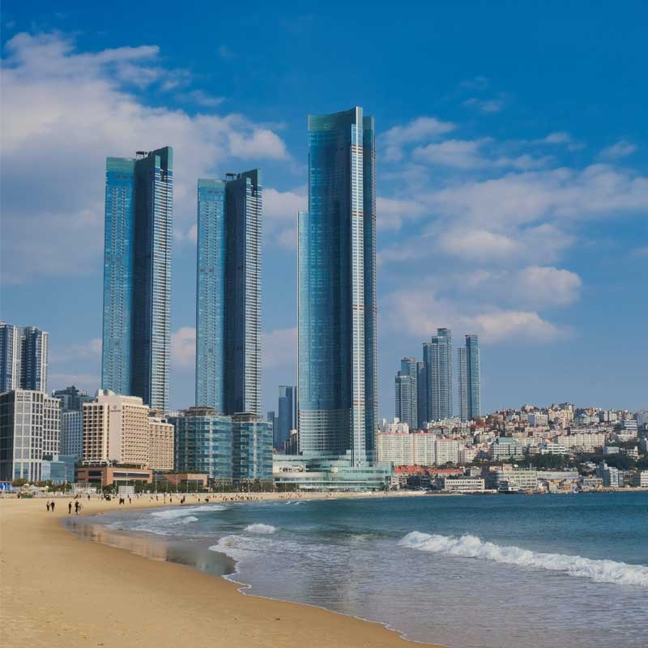
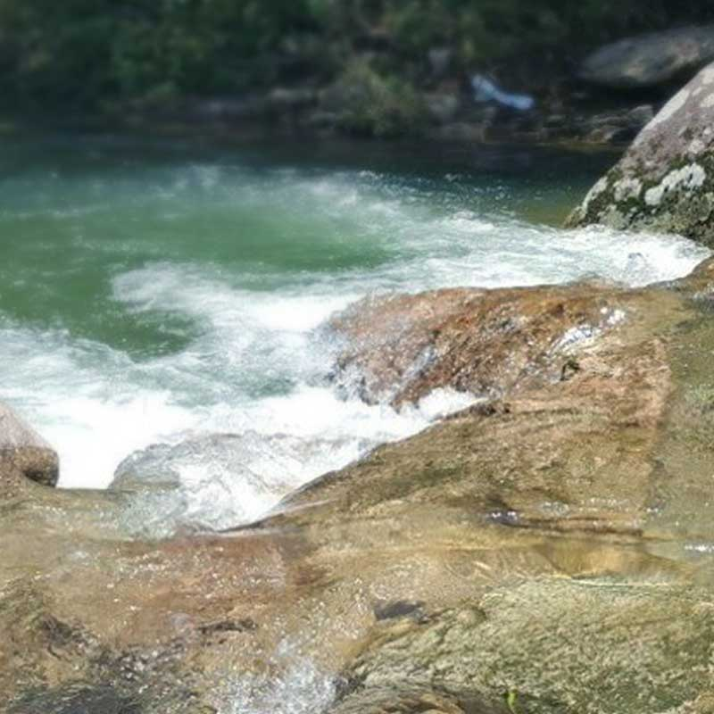
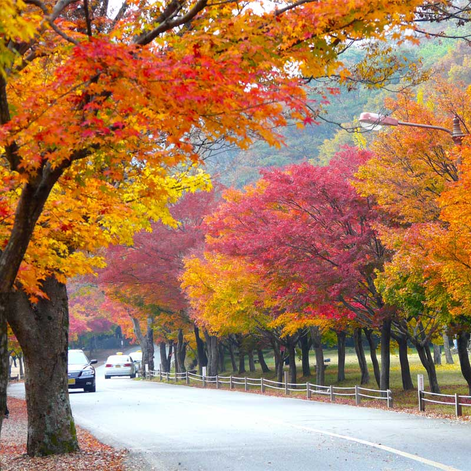
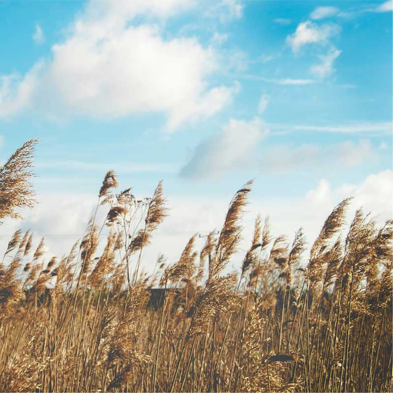
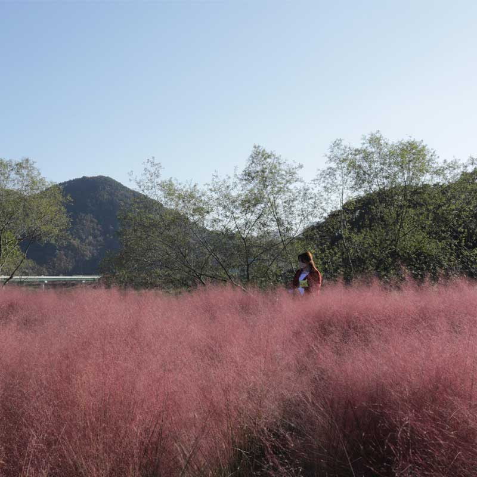

'영등포여의도봄꽃축제'는 2005년부터 매년 4월 국회 둘레길을 따라 열리는 봄맞이 꽃들의 향연입니다. 거리 가득 팔랑이는 벚꽃잎은 살아온 날의 축복이 되고, 걸음마다 피어나는 백 만 송이 봄꽃은 다가올 날을 향한 희망과 용기가 됩니다. 문화와 예술이 있는 '영등포여의도봄꽃축제'에서는 혼자라도 기쁘고 함께라면 더 즐겁습니다. 낮에는 푸른 한강과 파란 하늘의 춤과 노래로 생동하고, 밤이면 여의도의 불빛으로 반짝이는 꽃의 향취에 젖어 꽃보다 아름다운 사람들은 바람에 흩날리는 꽃잎만큼의 추억을 쌓아갑니다.
제주 유채꽃
매년 4월
‘시간을 더하는 마을’이라는 뜻의 가시리(加時里)는 제주에서도 유채꽃이 가장 많이 피는 곳이다. 한국의 아름다운 길 100선에 꼽힌 녹산로와 오름의 여왕이라 불리는 따라비오름, 큰사슴이오름 등 드넓게 펼쳐진 유채꽃밭과 오름의 능선, 멀리 보이는 수평선이 어우러져 제주의 중산간 가운데서도 빼어난 경관을 자랑한다.
이천 도자기
매년 4월 ~ 5월
이천에서 도자기가 만들어졌다는 사실은 효양산과 장동리, 설봉산성 등에서 출토된 유물들로 확인할 수 있습니다. 이 세지역에서는 대형 항아리와 옹기, 연대가 훨씬 오랜 무문토기, 선사시대 토기 파편 및 삼국시대 각 나라의 기와와 토기파편들도 함께 출토되었습니다. 따라서 이천은 적어도 청동기시대부터 토기제작이 활발하게 이루어진 역사적인 배경을 갖고 있으며 그 후 백제와 고구려 점령기를 거친 후 삼국시대 후반까지 패권 각축장이었던 탓으로 삼국 토기문화의 흔적들이 혼재되어 나타났습니다.
신안 튤립
매년 4월
2008년부터 시작 올해로 11회째를 맞이하며 12km의 규모를 자랑하는 백사장 대광해변과 튤립공원을 조성하여 관람객들에게 바다와 모래 그리고 튤립, 수선화, 히야신스, 무스카리, 아이리스 등 초화 구근류와 리빙스턴데이지, 크리산세멈, 비올라 등 초화류(20여 종)를 함께 볼 수 있는 기회를 마련하였다.
광양 매화
매년 3월
지리산 자락을 수놓으며 굽이굽이 흘러가는 섬진강을 따라가면 매화나무가 지천으로 심어져 있는 섬진마을이 있다. 이 마을의 농가들은 산과 밭에 곡식 대신 모두 매화나무를 심어 매년 3월이 되면 하얗게 만개한 매화꽃이 마치 백설이 내린 듯, 또는 하얀 꽃구름이 골짜기에 내려앉은 듯 장관을 이룬다.
부산 해운대
매년 5월 ~ 7월
동백섬 어귀에 위치한 더베이101에서 바라보는 밤의 마린시티 풍경도 빼놓지 말아야 할 코스다. 마천루의 불빛이 밤바다에 비치는 장관은 홍콩이나 뉴욕의 야경 못지않은 황홀함을 선사한다. 매년 5월~6월이면 해운대 바다의 새하얀 모래들은 ‘해운대 모래축제’에서 예술작품으로 재탄생한다. 또한 7월의 여름 밤을 뜨거운 열기로 물들이는 부산바다축제도 놓치지 말아야 할 행사다.
보령 머드
매년 7월 ~ 8월
보령 대천해수욕장 주변 해안에서 채취한 양질의 바다진흙을 가공한 머드파우더와 머드 파우더에서 추출한 머드 워터가 함유되어 있어 피부 노화방지, 피부노폐물 제거 등 피부 미용에 뛰어난 효능을 가지고 있으며 국내 유명 화장품 업체에서 OEM생산하고 있으며 보령시가 품질보증 판매하고 있다.
문경 쌍용
매일
청룡과 황룡이 살던 곳이라 하여 쌍룡계곡이라 이름 지어진 쌍용계곡은 문경의 도장산(828m) 자락을 흐르는 계곡으로 약 4km에 걸쳐 아름다운 경관이 펼쳐져 있으며, 도장산의 기암괴석과 층암절벽으로 둘러싸인 계곡으로 흘러내리는 옥계수는 심산유곡에 들어온 듯한 비경을 연출한다. 문경의 물놀이 명소 중 한 곳으로 여름철에는 많은 사람들이 찾는 곳이다.





내장산 단풍
매년 10월 ~ 11월
호남 5대의 명산 중 하나이자 한국을 대표하는 8경 중 하나로 손꼽히는 곳으로 1971년 우리나라 8번째 국립공원으로 지정되었다. 면적은 80.708k㎡이다. 신선봉(763m)을 주봉으로 하는 내장산은 봉우리들의 높이가 700m 내외지만 봉우리 정상이 저마다 독특한 기암으로 이루어져 있어 예로부터‘호남의 금강’이라 불렸다. 내장산은 원래 본사인 영은사의 이름을 따서 영은산(靈隱山)으로 불리다가 산 안에 감춰진 것이 무궁무진하다고 하여 안 내(內), 감출 장(藏) 자의 내장산으로 불리게 되었다.
우음도 갈대
매년 10월 ~ 11월
과거에 바다 였으나 시화호 방조제가 생기면서 대지가 생성되었습니다. 갈대와 삘기가 바람에 휩쓸려 갈색빛으로 물드는 풍경은 장관을 이룹니다. 한바퀴 둘러볼 수 있도록 산책길이 마련되어 있으며 풍경이 아름다우며 공룡 화석지로 알려진 만큼 곳곳에 공룡 모형들이 즐비해있습니다. 또한 주변에 높은 산이나 건물이 없어 시야가 확 트여 마음이 시원해지는 느낌을 받습니다.
경주 핑크뮬리
매년 9월 ~ 10월
핑크뮬리의 학명은 'Muhlenbergia Capillaris'입니다. 'Capillaris'는 '머리카락 같은, 머리털의'라는 뜻의 라틴어 'Căpilláris'에서 유래되었다. 이름처럼 가을에 꽃이 피면 산발한 분홍색 머리카락처럼 보여 아름다운 풍경을 지닙니다. 여름에 자라기 시작해 가을에 분홍색이나 자주색 꽃이 피어 같은 벼과 식물인 억새와 닮아서 분홍억새라고도 부른다.
인제 설악산
매년 12월 ~ 1월
1970년 우리나라에서 다섯 번째 국립공원으로 지정되었고, 1965년 천연기념물로 지정되었다. 국제적으로도 그 보존 가치가 인정되어 1982년 유네스코로부터 생물권보전지역으로 지정·관리되고 있는 지역이다. 설악산은 주봉인 대청봉을 비롯하여 소청봉, 중청봉, 화채봉 등 30여 개의 높은 산봉우리가 웅장하게 펼쳐져 있다.
대전 유성온천
매일
유성온천거리에는 눈을 닮은 하얀 꽃잎이 아름다운 이팝나무가 많이 심어져 있고, 눈꽃거리가 조성되어 아름답다. 지하 200M에서 끌어올린 41~43도를 유지하는 100% 온천수에 발을 담글 수 있는 두 개의 족욕탕과 수로시설을 갖추고 있는 족욕체험장이 무료로 개방되어 있다. 우리나라에서 가장 오래된 유성온천은 부존량과 사용량에서 전국 최대 규모를 자랑하고 있으며 약알칼리성 단순천으로 천질이 매끄럽고 피부에 자극이 없고 양이온 및 아연, 철 등 미네랄성 금속류들이 골고루 함유되어 있다.